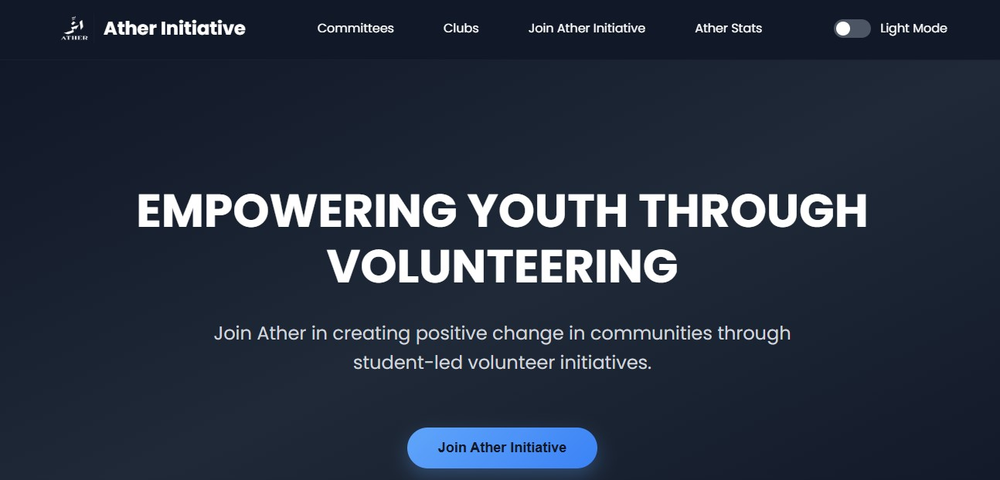
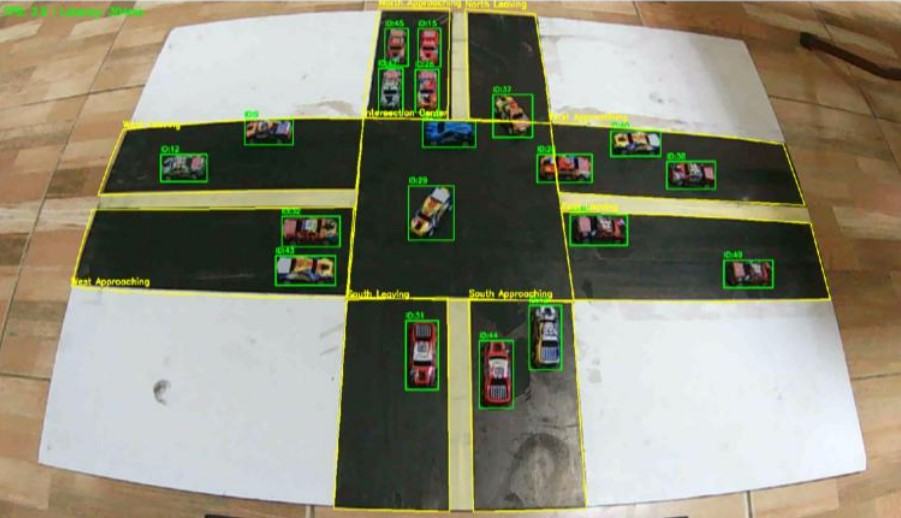
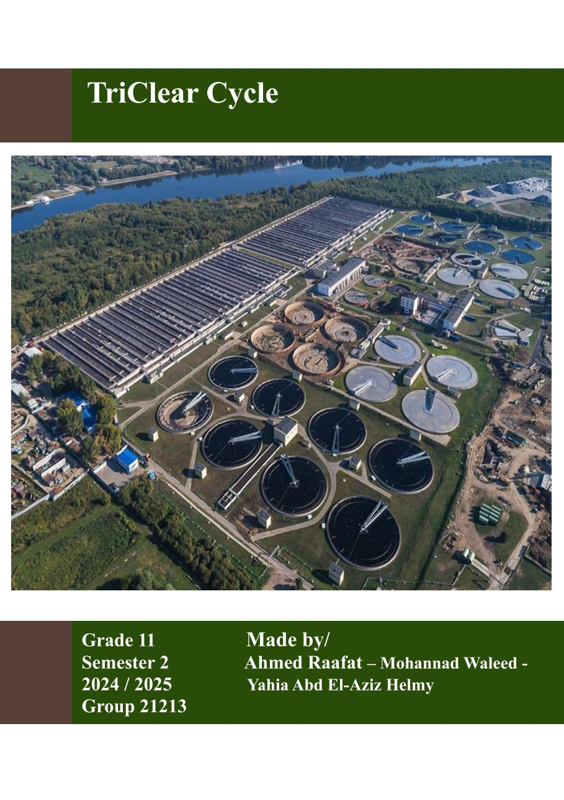

Full-Stack Developer, Chief of Web Dev at Ather Charity, and STEM leader building scalable platforms and AI-driven systems.
Obour STEM School (Class of 2026)
Combining technical rigor in web technologies with cognitive insights for high-impact social solutions.
Proficient in Node.js, TypeScript, HTML5, CSS3, Tailwind CSS, Git, and OOP architectures. Experienced in building responsive web applications and custom backends.
Chief of Web Development at Ather Charity. Led a 14-day intensive CS bootcamp for 50+ students, directing curriculum design and technical mentorship.
Engineered computer vision traffic preemption systems and wastewater purification membranes, blending empirical science with software engineering.
Roles where I spearheaded development and community leadership.
Leading full-stack development and UI design for social impact platforms. Directing version 2.0 architectural overhaul, continuous site maintenance, and junior developer code reviews.
Orchestrated a 14-day intensive boot camp for 50+ students. Designed project-based full-stack curriculums, bridging theory with practical UI/UX implementation and Node.js.
Producing technical and environmental content to drive community engagement and awareness across regional chapters.
Completed advanced full-stack training. Designed and built 4 practical web projects applying backend development with TypeScript, Object-Oriented Programming (OOP/OOD), DOM manipulation, APIs, and basic SQL.
Real solutions built for non-profits, urban infrastructure, and environmental sustainability.

Official web platform developed for Ather, a charitable initiative promoting student volunteerism and community engagement.
Features comprehensive mission showcases, organizational committee overviews, impact statistics, and an integrated online application system for new members across regional branches.

Engineered an advanced solution utilizing computer vision and adaptive AI algorithms to mitigate urban traffic congestion and emergency vehicle delays.
Focused on reducing wait times and fuel consumption via real-time density-based signal optimization. Empirical results demonstrated consistent outperformance over traditional fixed-timing models.

Triple-phase purification utilizing date seed adsorption, coagulation, and ceramic membranes—achieving a 62% TDS and 93% turbidity reduction.
Designed a sustainable triple-phase purification process combining materials science and chemical engineering principles to address agricultural wastewater pollution.
Utilized date seed adsorption, coagulation, and ceramic membrane filtration, successfully achieving a 62% reduction in Total Dissolved Solids (TDS), a 93% decrease in turbidity, and pH neutralization from 10 to 7.
The core languages, frameworks, and development tools I use to engineer robust digital solutions.
Analytical articles published in the Obour STEM School Magazine (2025).
A deep-dive analytical piece exploring the complex layers of Egyptian identity. The article contrasts ancient lineage (Hamitic descent) with modern cultural and linguistic Arabization, utilizing genetic studies and historical milestones to argue for Egypt’s status as a unique civilizational synthesis rather than a singular ethnic category.
A historical analysis of the seven debates that redefined American political rhetoric. This article examines the philosophical clash between "popular sovereignty" and moral conviction, tracing how these 19th-century confrontations established the logical and ethical frameworks still used in modern civil discourse..
A profile on Abraham Lincoln’s development from a frontier lawyer to a national leader. This article analyzes how his commitment to moral clarity, logical precision, and humanistic appeal served as a strategic tool for political change, offering timeless lessons in leadership and high-stakes communication..
Whether you need a full-stack web developer for your startup, quick landing pages, or technical outreach assistance, let's get it done.